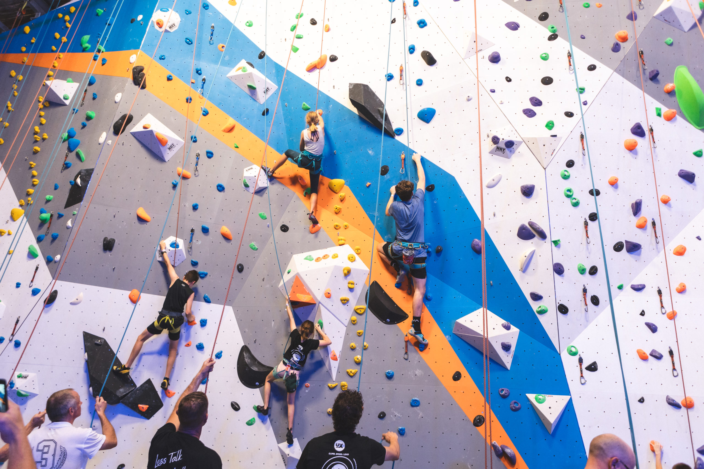
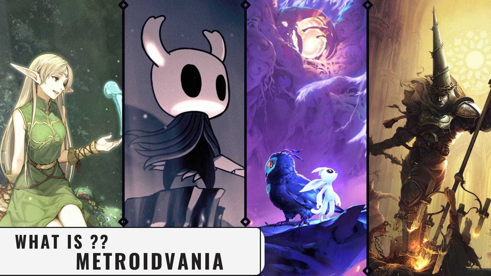

Rock Climbing
There are different types of rock climbing, the most commonly seen ones are bouldering and rope climbing.
Others may be Deep Water Soloing, free solo, and aid climbing.

Skating
skating, sport in which bladelike runners or sets of wheels attached to shoes are used for gliding on ice or other surfaces.
Testing Code
Code testing refers to running each line of code with a controlled input, and verifying if it performs the expected output.
Games!
-
Metroidvania
Metroidvania is a sub-genre of action-adventure games and/or platformers focused on guided non-linearity and utility-gated exploration and progression.
-
Survival
The popular survival games could be Raft, Terraria, Oxygen Not Included, Don't Starve, RimWorld, etc.
-
Crafting
Well Minecraft should be the most popular ones, and it keeps growing and now I become a newbie again LOL.
